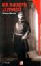
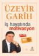
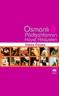

Adobe Ajax uygulamaları geliştirebilmek için Spry Framework'ü kullanıcılara sundu. Bu araç sayesinde HTML, CSS ve çok az javascript bilgisi ile ajax kodları üretilebilecek. Bunun yanında üç demo uygulamada mevcut: Fotoğraf Galerisi, RSS Okuyucu ve On-line Mağaza. Ayrıntılı bilgi ve programı indirmek için tıklayınız.
devamını oku(X)HTML Sayfa Yapısı ve CSS Kullanımı
CSS güçlüdür, çünkü CSS uygun stilleri ve bu stilleri nasıl uygulanacağını belirlemek için (X)HTML dökümanının yapısını kullanır. (X)HTML Sayfa yapısına stil uygulamanın bir çok yolu vardır. Ancak bu yolları öğrenmeden önce (X)HTML hiyerarşisini öğrenmemiz gerekir.
(X)HTML Döküman Hiyerarşisini Anlamak
Seçici(Selector) ve Döküman arasındaki ilişkiyi anlayabilmemiz ...
devamını okuSadece CSS ile resimlere hareket vermek
Sadece CSS kodları kullanarak resimlere Flash benzeri bir hareket vermek aklınıza gelirmi idi? Bazı arkadaşların başına güneş vurmuş olmalı işte örnek: Makale için tıklayınız(en)
devamını okuIE 7 Beta 3 Sürümü çıktı
Web tarayıcı(browser) pazarı iyice kızıştı. Gün geçmiyor ki bir beta, bir alfa veya bir tam versiyon çıkmasın. Bu kullanıcı için bir avantaj biz kodcular için görünüşte bir dezavantaj. Ancak geniş çapta düşünüldüğünde ise bir avantaj. Çünkü kızışan web tarayıcı pazarı, web tarayıcı üreticilerini daha fazla özellik ve daha fazla ...
devamını okuGoogle Web Toolkit - Google'un son numarası
Google Web Toolkit : Google'un Java ile Ajax kodu yazmak isteyen kullancılara sunduğu bir araç. Google Map ve Gmail gibi Ajax tabanlı programların yazıcısı Google'dan Ajax kodlamak isteyen kodlamacılar için bir araç Google Web Toolkit Henüz beta aşamasında olan program Ajax kodlayıcılar için güel bir araç. Ayrılı bilgi için ...
devamını okuFirefox 2.0 Alpha 1 versiyonunu Bu hafta çıkarıyor.
Firefox 2.0 Alpha 1 versiyonunu bu hafta çıkarıyor bazı yeni özellikler ve düzeltmeler göze çarpan ilk yenilkler. Örneğin RSS hatasının giderilmesi, Tab önizlmesi(Opera 9 vardı), önceki tab'ı kapat ve tab menüsü göze çarpan yenilikler. Ayrıntılı bilgi için tıklayınız
devamını okuBir Darbenin Anatomisi - Yılmaz Öztuna
Gizli kalmış tarihi aydınlatan mükemmel bir kitap. Osmanlının yıklışa geçtiği dönemi Sultan Abdulaziz'in katilin anlatan bir kitap. Herşeyi tüm çıplaklığı ile anlatan bir kitap. Arka Kapak: Yılmaz Öztuna bu kitabında 1876 askeri darbesini, Sultan Abdülaziz'in tahttan indirilmesini ve ölümü olayını, bütün şahitlerinin ifadelerini birinci elden kaynaklardan ve belgelerden ...
devamını okuİş Hayatında Motivasyon -Üzeyir Garih
Üzeyir Garih'in Kişisel Gelişim Başarı Serisindeki kitaplarında biri. Çok güzel ve yararlı olan bu kitabı tüm yöneticiler ve yönetilenlerin okumasını tavsiye ederim. Herkese yaralı olması bakımından bir kaç not vermek istiyorum so kısımdan
- Modern yönetimde ekip çalışması esastır. Ancak ekibin son sözü söyleyecek bir başı olması şarttır.
- Ekip başının ...
CSSMania'dan Dünya CSS Ödülleri
CSS Site tanıtım sitelerinin ünlülerinden CSSMania İlk Dünya CSS Ödüllerini dağıtıryor. 10 dalda değişik ödül dağıtılacak:
- Yılın sitesi
- Kurumsal
- Blog
- Ticari
- Eğlence
- Kurum
- Medya
- Portal
- Web Dizayn
- Web Araçları
Güzel sitelrin yarıltığı güzel bir yarışma Ayrıntılı bilg için CSSMania
devamını okuOsmanlı Padişahlarının Hayat Hikayeleri - yılmaz öztuna
Bazı Osmanlı Padişahlarını hayatlarını yalın bir şekilde anlatıldığı güzel bir eser. Akıcı ve güzel bilgiler içeren bir kitap. Ayrıntılı bilgi için: [Ütüken Neşriyat]]
]: http://www.otuken.com.tr/arama.asp?key=ISBN+975-437-266-7&Image1.x=17&Image1.y=10&ara=ISBN
devamını oku